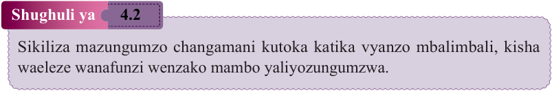
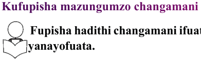
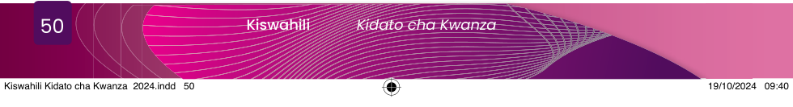

Zoezi la 4.1
Andika kwa kirefu maneno yaliyokozwa wino katika ngonjera uliyoisikiliza.
Kifungu cha maneno “mti mkavu” ni sehemu ya methali ipi na methali hiyo ina maana gani?
Eleza maana ya nahau “kuzunguka mbuyu” kama ilivyotumika katika ngonjera uliyoisikiliza.
Bainisha maneno yaliyojirudiarudia kutoka kwenye ngonjera uliyoisikiliza.
Unafikiri kwa nini maneno uliyoyabainisha katika swali la 4 yamerudiwarudiwa?

Shughuli ya 4.2
Sikiliza mazungumzo changamani kutoka katika vyanzo mbalimbali, kisha waeleze wanafunzi wenzako mambo yaliyozungumzwa.
Kufupisha mazungumzo changamani

Fupisha hadithi changamani ifuatayo kwa kuzungumza, kisha jibu maswali yanayofuata.
Wavuvi walilazimika kubadilisha kazi yao kwa takribani miezi miwili. Hii ilitokana na mtumbwi wao kuharibika na kuanza kuingiza maji mengi kupitia mianya iliyokuwa imejitokeza kwenye maungio ya mbao zake. Ingawa kulikuwa na upo mzuri wa kufanyia kazi waliokuwa wakiutumia, uingiaji wa maji ulikuwa mkubwa mno. Uingiaji huo wa maji ulifanya kazi ya kukumba maji hayo isiwezekane. Kwa kweli, tatizo hilo lilitokana na uzembe wao wenyewe. Kama wangechukua hadhari mapema, tatizo hilo lisingekuwa kubwa kiasi hicho. Wahenga walisema usipoziba ufa utajenga ukuta. Kutokana na hali hiyo, ilibidi mtumbwi usimamishwe kufanya kazi ili ukalafatiwe kwanza. Hata hivyo, kazi yenyewe ya ukalafati haikuwa kubwa na isingeweza kuchukua muda mrefu kiasi hicho, lakini kuliibuka mushikeli. Fundi aliyekuwa anaifanya kazi hiyo aliishiwa na kalafati ikabidi waagize nyingine kutoka Tanga. Baada ya kalafati kuletwa, fundi alibaini kuwa mtumbwi ulikuwa umeoza na haufai tena kukalafatiwa. Kutokana na mtumbwi kushindikana kutengenezwa, shughuli ya uvuvi iliishia njiani.
Waliamua kufanya kazi nyingine ya kununua ng'ombe na kuuza. Walizunguka usiku na mchana vijijini kutafuta ng'ombe kwa wafugaji. Aidha, waliamua kuhamia kule walikokuwa wakienda kutafuta ng'ombe kwa matumaini kwamba wangepata ng'ombe wengi zaidi; lakini wapi! Hawakupata ng'ombe wengi kama walivyotarajia na baadhi yao waliandamwa na magonjwa. Wajasiariamali hao waliamua kurudi
